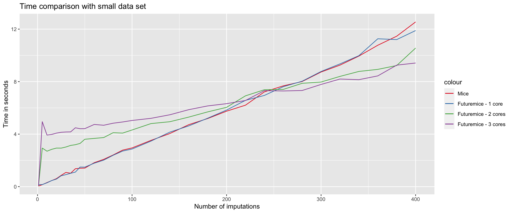

For big datasets or high number of imputations, performing multiple imputation with function mice from package mice (Van Buuren & Groothuis-Oudshoorn, 2011) might take a long time. As a solution, wrapper function futuremice was created to enable the imputation procedure to be run in parallel. This is done by dividing the imputations over multiple cores (or CPUs), thus potentially speeding up the process. The function futuremice is a sequel to parlMICE (Schouten & Vink, 2017), developed to improve user-friendliness.
This vignette demonstrates two applications of the futuremice function. The first application shows the tradeoff between time and increasing number of imputations (\(m\)) for a small dataset; the second application does the same, but for a relatively large dataset. We also discuss futuremice’s arguments.
The function futuremice depends on packages future, furrr and mice. For more information about running functions in futures, see e.g. the future manual or the furrr manual. Function futuremice found its inspiration from Max’s useful suggestions on parallelization of mice’s chains on stackoverflow.
Time gain with small datasets
We demonstrate the potential gain in computing efficiency on simulated data. To this end we sample 1,000 cases from a multivariate normal distribution with mean vector
A MCAR missingness mechanism is imposed on the data where 80 percent of the cases (i.e. rows) has missingness on one variable. All variables have missing values. The missingness is randomly generated with the following arguments from function mice::ampute:
[,1] [,2] [,3] [,4]
[1,] -0.1667048 0.9165856 0.6389869 NA
[2,] -0.4548685 0.4313280 NA 0.5753627
[3,] -1.2432777 -0.4162831 -1.9552769 NA
[4,] -0.1366822 NA -0.5998099 0.7553689
[5,] -1.6633582 -0.7137484 1.8412701 0.1269927
[6,] NA -1.3018272 -1.4972105 -1.9058145
We compare the default ‘sequential’ function mice with function futuremice. In both functions we use the defaults arguments for the mice algorithm, although these could very easily be changed if desired by the user. To demonstrate the increased efficiency when putting more than one computing core to work, we repeat the procedure with futuremice for 1, 2, 3 and 4 cores. Figure 1 shows a graphical representation of the results.

Figure 1. Processing time for small datasets. Multiple imputations are performed with mice (conventional) and wrapper function futureMICE (1, 2, 3 and 4 cores, respectively). The dataset has 1000 cases and 4 variables with a correlation of 0.5. 80 percent of the cases has one missing value based on MCAR missingness.
It becomes apparent that for a small to moderate number of imputations, the conventional mice function is faster than the wrapper function futuremice. This is the case until the number of imputations \(m = 120\). For higher \(m\), wrapper function futuremice returns the imputations somewhat faster.
Time gain with large datasets
We replicated the above detailed simulation setup with a larger dataset of 10,000 cases and 8 variables. The mean and covariance structure follow the sampling scheme of the smaller data set. We show the results of this simulation in Figure 2.
Figure 2. Processing time for large datasets. Multiple imputations are performed with mice (conventional) and wrapper function parlMICE (1, 2 and 3 cores respectively). The dataset has 10000 cases and 8 variables with a correlation of 0.5. 80 percent of the cases has one missing value based on MCAR missingness.
When datasets are sufficiently large, function futuremice works faster than mice for all \(m\). In such cases, even for very small numbers of imputations, running mice in parallel with futuremice saves a significant amount of time. This gain in efficiency can increase to more than 50 percent for \(100\) imputations and more.
There is not a large difference between using 2 and 3 cores with wrapper function parlMICE. For all number of imputations, the procedure runs faster with 3 cores, even though the imputations have to be divided over the cores. It might therefore be desirable to use always as many cores as possible, while leaving 1 core out to govern any overhead computing. For example, on a hexacore machine, use only 5 cores to run the mice algorithm in parallel with futuremice.
Default settings
We will now discuss the arguments of function futuremice. Easy imputation of an incomplete dataset (say, nhanes) can be performed with futuremice in the following way.
imp <-futuremice(nhanes)class(imp)
[1] "mids"
The function returns a mids object as created by mice. In fact, futuremice makes use of function mice::ibind to combine the mids objects returned by the different cores. Therefore, the call of the mids object has slightly changed.
imp$call
[[1]]
mice(data = data, m = x, printFlag = FALSE, seed = seed)
[[2]]
ibind(x = imp, y = imps[[i]])
[[3]]
ibind(x = imp, y = imps[[i]])
[[4]]
ibind(x = imp, y = imps[[i]])
[[5]]
ibind(x = imp, y = imps[[i]])
Additionally, futuremice makes use of a parallelseed argument that is stored in imp$parallelseed.
If no seed is specified by the user, a seed will be drawn randomly from a uniform distribution \(U(-999999999,999999999)\), and this seed will be returned, such that the user can reproduce the obtained results even when no seed is specified. See section Argument parallelseed for more information.
All other parts of the mids object are standard.
Using mice arguments
Function futuremice is able to deal with the conventional mice arguments. In order to change the imputation method from its default (predictive mean matching) to, for example, Bayesian linear regression, the method argument can be adjusted. For other possibilities with mice, we refer to the micemanual.
In mice, the number of imputations is specified with argument m. In futuremice, the same argument should be used, and futuremice takes care of dividing the imputations equally over the cores. The next section discusses these arguments.
Argument n.core
With n.core, the number of cores (or CPUs) is given, and the number of imputations m is (about) equally distributed over the cores.
As a default, n.core is specified as the number of available, logical cores minus 1. The default number of imputations has been set to m = 5, just as in a regular mice call. Hence, on machines with 4 available, logical cores, \(5\) imputations are divided over 3 cores, leaving 1 core available for any overhead computations. This results in a number of imputations per core of: \(core1, core1, core2, core3, core3\), respectively.
The computer with which this vignette is run, has
parallelly::availableCores(logical =TRUE)
system
8
available, logical cores. Accordingly, the number of imputations per core equals core1, core1, core2, core3, core3 We can check this by evaluating the \(m\) that is shown in the mids object.
imp$m
Argument parallelseed
In simulation studies, it is often desired to set a seed to make the results reproducible. Similarly to mice, the seed value for futuremice can be defined outside the function. Under the hood, futuremice makes use of the furrr::furrr_options(seed = TRUE) argument, which recognizes that a seed has been specified in the global environment. Hence users can specify the following code to obtain identical results.
library(magrittr)
Attaching package: 'magrittr'
The following object is masked from 'package:purrr':
set_names
set.seed(123)imp1 <-futuremice(nhanes, n.core =3)set.seed(123)imp2 <-futuremice(nhanes, n.core =3)imp1 %$%lm(chl ~ bmi) %>% pool %$% pooled
term m estimate ubar b t dfcom df
1 (Intercept) 5 129.350091 3029.97733 798.544710 3988.23098 23 13.08385
2 bmi 5 2.439893 4.20187 1.086733 5.50595 23 13.20235
riv lambda fmi
1 0.3162577 0.2402703 0.3347415
2 0.3103571 0.2368492 0.3310517
imp2 %$%lm(chl ~ bmi) %>% pool %$% pooled
term m estimate ubar b t dfcom df
1 (Intercept) 5 129.350091 3029.97733 798.544710 3988.23098 23 13.08385
2 bmi 5 2.439893 4.20187 1.086733 5.50595 23 13.20235
riv lambda fmi
1 0.3162577 0.2402703 0.3347415
2 0.3103571 0.2368492 0.3310517
A user can also specify a seed within the futuremice call, by specifying the argument parallelseed. This seed is parsed to withr::local_seed(), such that the global environment is not affected by a different seed within the futuremice function. Hence, users can also specify a seed as follows.
imp3 <-futuremice(nhanes, parallelseed =123, n.core =3)imp4 <-futuremice(nhanes, parallelseed =123, n.core =3)imp3 %$%lm(chl ~ bmi) %>% pool %$% pooled
term m estimate ubar b t dfcom df
1 (Intercept) 5 129.350091 3029.97733 798.544710 3988.23098 23 13.08385
2 bmi 5 2.439893 4.20187 1.086733 5.50595 23 13.20235
riv lambda fmi
1 0.3162577 0.2402703 0.3347415
2 0.3103571 0.2368492 0.3310517
imp4 %$%lm(chl ~ bmi) %>% pool %$% pooled
term m estimate ubar b t dfcom df
1 (Intercept) 5 129.350091 3029.97733 798.544710 3988.23098 23 13.08385
2 bmi 5 2.439893 4.20187 1.086733 5.50595 23 13.20235
riv lambda fmi
1 0.3162577 0.2402703 0.3347415
2 0.3103571 0.2368492 0.3310517
This also yields identical results for imp3 and imp4. However, note that this does not result in the exact same imputations as the procedure where the seed is specified in the global environment.
If no seed is specified in the global environment, or in the call itself, the results are still reproducible, because in such circumstances, futuremice randomly draws a seed from a uniform distribution \(U(-999999999,999999999)\). This randomly drawn seed is stored under $parallelseed in the output object, such that reproducible results can be obtained as follows.
imp5 <-futuremice(nhanes, n.core =3)parallelseed <- imp5$parallelseed[1]imp6 <-futuremice(nhanes, parallelseed = parallelseed, n.core =3)imp5 %$%lm(chl ~ bmi) %>% pool %$% pooled
term m estimate ubar b t dfcom df
1 (Intercept) 5 114.773367 3003.784878 679.3464599 3819.000630 23 14.02992
2 bmi 5 3.047209 4.215382 0.6232608 4.963295 23 16.35719
riv lambda fmi
1 0.2713962 0.2134631 0.3058343
2 0.1774247 0.1506888 0.2384403
imp6 %$%lm(chl ~ bmi) %>% pool %$% pooled
term m estimate ubar b t dfcom df
1 (Intercept) 5 123.52773 3273.760850 1170.967485 4678.921832 23 11.12769
2 bmi 5 2.68347 4.548798 1.763287 6.664742 23 10.61455
riv lambda fmi
1 0.4292192 0.3003173 0.3993685
2 0.4651656 0.3174833 0.4177461
WARNING: Under unique circumstances, users might want to check whether imputations obtained under different streams are identical. This can be done by specifying the regular seed argument in the futuremice call. This seed is parsed to the separate mice calls within all futures, such that the results will be identical over the cores. If users specify the seed argument rather than the parallelseed argument, futuremice will ask if this is intended behavior if the user is in an interactive() session. Otherwise, a warning will be printed.
Systems other than Windows
Function futuremice calls for function future_map with plan("multisession") from the furrrpackage. Although other options are available, we have chosen for the plan("multisession") because it allows for the use of multiple cores on all computers, including a Windows computer. The user may adjust this by specifying the future.plan argument within futuremice. Other options are for example future.plan = "multicore", which results in plan("multicore") (which is not supported on Windows computers), future.plan = "cluster", resulting in plan("cluster"). For all options regarding plan(), check ?future::plan().
Van Buuren, S. and Groothuis-Oudshoorn, K. (2011). mice: Multivariate imputation by chained equations in R. Journal of Statistical Software, 45 (3), 1-67.